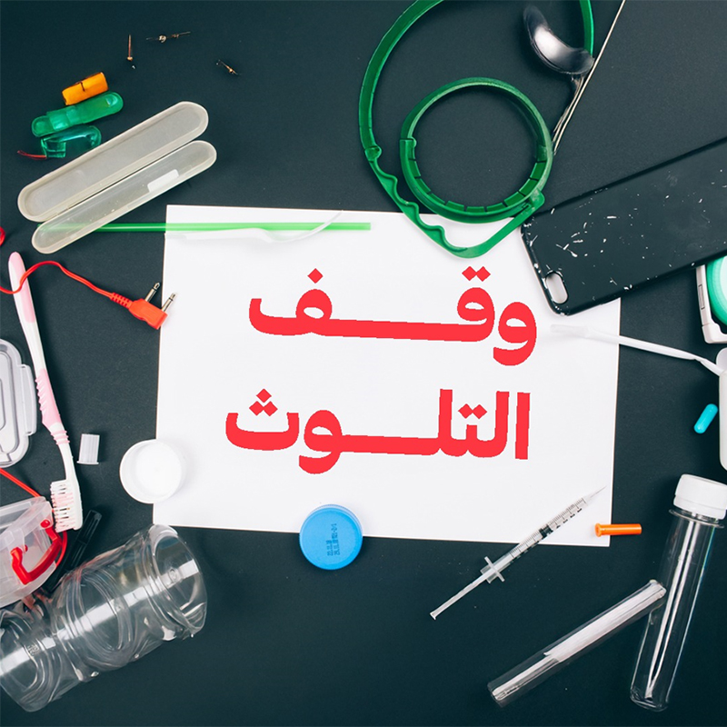
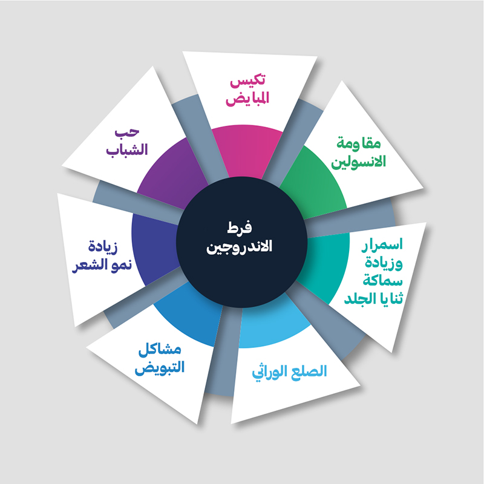
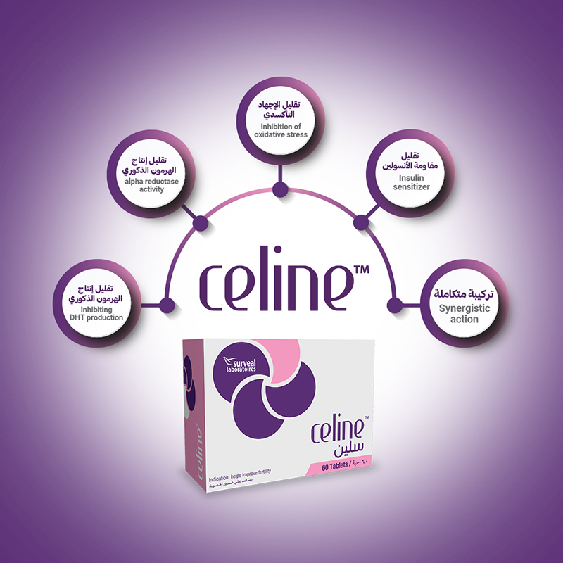
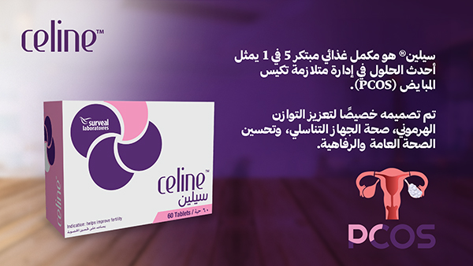

النظام الغذائي غير الصحي وعادات نمط الحياة السيئة
السمنة، والنظام الغذائي الغني بالسكر والدهون والأطعمة المصنعة، بالإضافة إلى التدخين واستهلاك الكحول، كلها عوامل تساهم في حدوث الإجهاد التأكسدي.

يشير الإجهاد التأكسدي إلى عدم التوازن بين الجذور الحرة ومضادات الأكسدة في الجسم، مما قد يؤثر سلبًا على صحتك. قد يكون مرتبطًا بمتلازمة تكيس المبايض الأيضية (PCOS/PMOS) من خلال المساهمة في ارتفاع مستويات هرمونات الذكورة (الأندروجينات)، والعقم، ومقاومة الأنسولين.
قد يساعد Celine® في تقليل تكوّن الجذور الحرة في الجسم من خلال تزويده بمضادات الأكسدة، مما يساعد في الحماية من التأثيرات الضارة لهذه الجزيئات.
توجد عدة عوامل تساهم في حدوث الإجهاد التأكسدي والإفراط في إنتاج الجذور الحرة، بما في ذلك:
السمنة، والنظام الغذائي الغني بالسكر والدهون والأطعمة المصنعة، بالإضافة إلى التدخين واستهلاك الكحول، كلها عوامل تساهم في حدوث الإجهاد التأكسدي.

التعرض للتلوث، الإشعاع، والسموم البيئية المختلفة مثل المبيدات الحشرية والمواد الكيميائية الصناعية.
يمكن أن ينتج عن الإجهاد التأكسدي تلف في الخلايا والبروتينات والحمض النووي (DNA)، مما يؤدي إلى ظهور علامات الشيخوخة المبكرة مثل التجاعيد، الشيب، وتراجع البصر.
الألم والانزعاج يمكن أن يظهر الإجهاد التأكسدي على شكل آلام جسدية في العضلات أو المفاصل، بالإضافة إلى الصداع المتكرر.
يمكن أن يؤدي إلى فقدان الذاكرة أو الشعور بضباب الدماغ.
يمكن أن يساهم في مقاومة الأنسولين وقد يؤدي في النهاية إلى الإصابة بمرض السكري من النوع 2.

هو حالة يحدث فيها الإجهاد التأكسدي، مما يؤدي إلى مقاومة الأنسولين، وبالتالي تحفيز المبايض على إنتاج كميات زائدة من الأندروجينات (هرمونات الذكورة). وهذا يؤدي إلى ارتفاع مستويات هرمونات الذكورة وتأثيرها على جسم المرأة.
قد تنشأ بسبب الإجهاد التأكسدي، حيث يؤثر على جودة البويضات المستخدمة في علاجات الخصوبة المساعدة مثل التلقيح الصناعي (IVF). وهذا يمكن أن يقلل من فرص نجاح التلقيح الصناعي أو يزيد من خطر الإجهاض.
استشر الطبيب الخاص بك حول مكمل غذائي متكامل 5 في 1 مصمم خصيصًا لمعالجة الاختلالات والمشكلات الصحية المرتبطة بمتلازمة تكيس المبايض الأيضية (PCOS/PMOS). يتميز هذا المكمل بتركيبة فريدة قائمة على أبحاث علمية متقدمة ويستخدم تقنية الامتصاص السريع والبطيء لضمان فعالية مستمرة، مما يساعد على تحسين الصحة الهرمونية والإنجابية بطريقة مبتكرة ومريحة.

